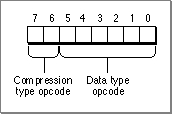

Data Type Opcode Byte
A data type opcode byte always follows the record size. This byte contains both a compression type opcode and a data type opcode. Figure 7-5 shows the format of the data type opcode byte.
Figure 7-5 The format of the data type opcode byte

Compression Type Opcode
Bits 6 and 7 of the data type opcode byte contain the compression type opcode. This opcode specifies the type of compression used for the data that follows. The 2-bit compression opcode constants from the gxTwoBitCompressionValues enumeration specifies whether the next data are longs, words, bytes, or that no data follows. Table 7-2 lists the compression type opcode values.
Table 7-2 Compression values
| Value | Description |
| 0x00 | No compression has been applied. The data that follows are long words. |
| 0x40 | Word compression has been applied. The data that follows are words. |
| 0x80 | Byte compression has been applied. The data that follows are bytes. |
| 0xC0 | Omit compression. No data follows. |
The gxTwoBitCompressionValues enumeration is also used to interpret the compression in the omit byte. For additional information about the interpretation of omit bytes, see the section "Omit Byte Masks and Omit Byte Shifts" beginning on page 7-22.
The relationship of the operation opcode, record size, compression type opcode, data type opcode, and optional data for a header or object is shown in Figure 7-6.
Figure 7-6 Relationship of stream format components
The appearance or absence of data after the data type opcode byte depends upon the values that appear in the operation opcode byte and the data type opcode byte.
If the gxNewObjectOpcode constant appears in the operation opcode byte, a new object follows. The new object copies the default values into the newly created object. The default values may have been changed by the last object created of this type. If the last object and the current object are equal, then the new object requires no additional data for its definition. In this case, the stream following the new opcode byte contains only the compression and data type opcode byte with compression set to no compression.
If the gxSetDataOpcode constant appears in the operation opcode byte, the record length is greater than 1 byte and object-specific data follows.
The gxSetDefaultOpcode constant appears only after the current object type has been defined. If the gxSetDefaultOpcode constant appears in the operation opcode byte, the data type opcode contains the gxStyleTypeOpcode, gxInkTypeOpcode, or gxTransformTypeOpcode constant. The compression type opcode defines the compression of the data of the object reference number that follows. This previously defined object becomes the default styles, ink, or transform for the shapes created subsequently.
The sequence of the object-specific data that follows the data type opcode byte is described in the next section. Subsections are provided for the header, shape data, style, ink, transform, color profile, color set, tag, bit image, font name, and trailer objects.
Data Type Opcode
Bits 0 through 5 of the data type opcode byte contain the data type opcode. This opcode specifies the type of data that follows. The type of data that follows depends upon the current value of the operation opcode. If the operation opcode is gxNewObjectOpcode, the data type opcode describes a new object. These data type opcodes are described in the next section. If the operation opcode is gxSetDataOpcode, the data type opcode, specifies how the current object will be modified. These data type opcodes are described in the sections "Data Type Opcodes to Modify a Shape Object" beginning on page 7-17, "Data Type Opcodes to Modify a Color Set Object" beginning on page 7-20, "Data Type Opcodes to Modify a Color Profile Object" beginning on page 7-21, and "Data Type Opcodes to Modify a Transform Object" beginning on page 7-21.
Data Type Opcodes for a New Object
When the current operation opcode is the gxNewObjectOpcode constant, bits 0 through 5 of the data type opcode byte specify the data type opcode for the new object. Data type opcode constants for header, style, ink, transform, color profile, color set, tag type, bit image, font name, and trailer are defined in the gxGraphicsNewOpcode enumeration. Data type opcode constants for empty, point, line, curve, rectangle, polygon, path, bitmap, text, glyph, layout, full, and picture are defined in the gxShapeTypes enumeration. Table 7-3 summarizes all of the data type opcodes for a new object.
Table 7-3 Data type opcodes for a new object
| Constant | Value | Description |
gxHeaderTypeOpcode | 0x00 | The data that follows is the header. |
gxEmptyType | 0x01 | The data that follows describes an empty shape object. See the GXNewShape(gxEmptyType) function. |
gxPointType | 0x02 | The data that follows describes a point object. See the GXNewPoint function. |
gxLineType | 0x03 | The data that follows describes a line object. See the GXNewLine function. |
gxCurveType | 0x04 | The data that follows describes a curve object. See the GXNewCurve function. |
| |
gxRectangleType | 0x05 | The data that follows describes a rectangle object. See the GXNewRectangle function. |
gxPolygonType | 0x06 | The data that follows describes a polygon object. See the GXNewPolygons function. |
gxPathType | 0x07 | The data that follows describes a path object. See the GXNewPaths function. |
gxBitmapType | 0x08 | The data that follows describes a bitmap object. See the GXNewBitmap function. |
gxTextType | 0x09 | The data that follows describes a text object. See the GXNewText function. |
gxGlyphType | 0x10 | The data that follows describes a glyph object. See the GXNewGlyph function. |
gxLayoutType | 0x11 | The data that follows describes a layout object. See the GXNewLayout function. |
gxFullType | 0x12 | The data that follows describes a full shape object. See the GXNewShape(gxFullType) function. |
gxPictureType | 0x13 | The data that follows describes a picture object. See the GXNewPicture function. |
gxStyleTypeOpcode | 0x28 | The data that follows describes a style object. See the GXNewStyle function. |
gxInkTypeOpcode | 0x29 | The data that follows describes an ink object. See the GXNewInk function. |
gxTransformTypeOpcode | 0x2A | The data that follows describes a transform object. See the GXNewTransform function. |
| gxColorProfileOpcode | 0x2B | The data that follows describes a color profile object. See the GXNewColorProfile function. |
| gxColorSetOpcode | 0x2C | The data that follows describes a color set object. See the GXNewColorSet function. |
| gxTagTypeOpcode | 0x2D | The data that follows describes a tag object. See the GXNewTag function. |
| gxBitImageOpcode | 0x2E | The data that follows describes a bit image, the bits pointed to by a bitmap. |
| gxFontNameTypeOpcode | 0x2F | The data that follows describes a font name. See the GXNewFont function. |
| gxTrailerTypeOpcode | 0x3F | This opcode indicates the end of a data stream. |
The omitted numbers are reserved by Apple Computer, Inc. for future use. You should extend the stream format by using tag objects to encapsulate custom data. Tags are described in the "Tag Objects" in Inside Macintosh:QuickDraw GX Objects.
Data Type Opcodes to Modify a Shape Object
When the current object is a shape object and the current operation opcode is the gxSetDataOpcode constant, bits 0 through 5 of the data type opcode byte specify the data type opcode for the shape object to be modified. Data type opcode constants for attributes, tag, ink, and fill are defined in the gxShapeDataOpcode enumeration.
Table 7-4 summarizes all of the data type opcodes used to modify a shape object.
Table 7-4 Data type opcodes to modify a shape object
| Constant | Value | Description |
gxShapeAttributesOpcode | 0x00 | The attributes data that follows is added to the current shape object. See the GXSetShapeAttributes function. |
gxTagOpcode | 0x01 | The tag data that follows is added to the current shape object. See the GXSetShapeTags function. |
gxFillOpcode | 0x02 | The fill data that follows is added to the current shape object. See the GXSetShapeFill function. |
Data Type Opcodes to Modify a Style Object
When the current object is a style object and the current operation opcode is the gxSetDataOpcode constant, bits 0 through 5 of the data type opcode byte specify the data type opcode for the style object to be modified. Data type opcode constants for attributes, tag, curve error, pen, join, dash, caps, pattern, text attributes, text size, font, text face, platform, font variations, run controls, run priority justification override, run glyph justification overrides, run glyph substitutions, run features, run kerning adjustments, and justification are defined in the gxStyleDataOpcode enumeration. Table 7-5 summarizes all of the data type opcodes used to modify a style object.
Table 7-5 Data type opcodes to modify a style object
| Constant | Value | Description |
gxStyleAttributesOpcode | 0x00 | The attributes data that follows is added to the current shape object. See the GXSetStyleAttributes function. |
gxStyleTagOpcode | 0x01 | The tag data that follows is added to the current shape object. See the GXSetStyleTags function. |
gxStyleCurveErrorOpcode | 0x02 | The curve error data that follows is added to the current style object. See the GXSetStyleCurveError function. |
gxStylePenOpcode | 0x03 | The pen data that follows is added to the current style object. See the GXSetStylePen function. |
gxStyleJoinOpcode | 0x04 | The join data that follows is added to the current style object. See the GXSetStyleJoin function. |
gxStyleDashOpcode | 0x05 | The dash data that follows is added to the current style object. See the GXSetStyleDash function. |
gxStyleCapsOpcode | 0x06 | The caps data that follows is added to the current style object. See the GXSetStyleCaps function. |
gxStylePatternOpcode | 0x07 | The pattern data that follows is added to the current style object. See the GXSetStylePattern function. |
gxStyleTextAttributesOpcode | 0x08 | The text attributes data that follows is added to the current style object. See the GXSetStyleTextAttributes function. |
gxStyleTextSizeOpcode | 0x09 | The text size data that follows is added to the current style object. See the GXSetStyleTextSize function. |
gxStyleFontOpcode | 0x0A | The font data that follows is added to the current style object. See the GXSetStyleFont function. |
gxStyleTextFaceOpcode | 0x0B | The text face data that follows is added to the current style object. See the GXSetStyleFace function. |
gxStylePlatformOpcode | 0x0C | The platform data that follows is added to the current style object. See the GXSetStyleEncoding function. |
gxStyleFontVariationsOpcode | 0x0D | The font variations data that follows is added to the current style object. See the GXSetStyleFontVariations function. |
gxStyleRunControlsOpcode | 0x0E | The run controls data that follows is added to the current style object. See the GXSetStyleRunControls function. |
gxStyleRunPriorityJustOverrideOpcode | 0x1F | The run priority justification override data that follows is added to the current style object. See the GXSetStyleRunPriorityJust
Override function. |
gxStyleRunGlyphJustOverridesOpcode | 0x10 | The run glyph justification overrides data that follows is added to the current style object. See the GXStyleRunGlyphJust
Overrides function. |
gxStyleRunGlyphSubstitutionsOpcode | 0x11 | The run glyph substitutions data that follows is added to the current style object. See the GXStyleRunGlyphSubstitutions function. |
gxStyleRunFeaturesOpcode | 0x12 | The run features data that follows is added to the current style object. See the GXStyleRunFeatures function. |
gxStyleRunKerningAdjustmentsOpcode | 0x13 | The run kerning adjustments data that follows is added to the current style object. See the GXStyleRunKerning
Adjustments function. |
gxStyleJustificationOpcode | 0x14 | The justification data that follows is added to the current style object. See the GXStyleJustification function. |
Data Type Opcodes to Modify an Ink Object
When the current object is an ink object and the current operation opcode is the gxSetDataOpcode constant, bits 0 through 5 of the data type opcode byte specify the data type opcode for the ink object to be modified. Data type opcode constants for attributes, tag, color, and transfer mode are defined in the gxInkDataOpcode enumeration. Table 7-6 summarizes all of the data type opcodes used to modify an ink object.
Table 7-6 Data type opcodes to modify an ink object
| Constant | Value | Description |
gxInkAttributesOpcode | 0x00 | The attributes data that follows is added to the current ink object. See the GXSetInkAttributes function. |
gxInkTagOpcode | 0x01 | The tag data that follows is added to the current ink object. See the GXSetInkTags function. |
gxInkColorOpcode | 0x02 | The ink color data that follows is added to the current ink object. See the GXSetInkColor function. |
gxInkTransferModeOpcode | 0x03 | The ink transfer mode data that follows is added to the current ink object. See the GXSetInkTransfer function. |
Data Type Opcodes to Modify a Color Set Object
When the current object is a color set object and the current operation opcode is the gxSetDataOpcode constant, bits 0 through 5 of the data type opcode byte specify the data type opcode for the color set object to be modified. A data type opcode constant for tag is defined in the gxColorSetDataOpcode enumeration. The constant 0 is reserved for future use. Table 7-7 summarizes all of the data type opcodes used to modify a color set object.
Table 7-7 Data type opcodes to modify a color set object
| Constant | Value | Description |
gxColorSetReservedOpcode | 0x00 | This constant is reserved for future assignment. |
gxColorSetTagOpcode | 0x01 | The tag data that follows is added to the current color set object. See the GXSetColorSetTags function. |
Data Type Opcodes to Modify a Color Profile Object
When the current object is a color profile object and the current operation opcode is the gxSetDataOpcode constant, bits 0 through 5 of the data type opcode byte specify the data type opcode for the color profile object to be modified. A data type opcode constant for tag is defined in the gxProfileDataOpcode enumeration. The constant 0 is reserved for future use. Table 7-8 summarizes the data type opcodes used to modify a color profile object.
Table 7-8 Data type opcodes to modify a color profile object
| Constant | Value | Description |
gxColorProfileReservedOpcode | 0x00 | This constant is reserved for future assignment. |
gxColorProfileTagOpcode | 0x01 | The tag data that follows is added to the current color profile object. See the GXSetColorProfileTags function. |
Data Type Opcodes to Modify a Transform Object
When the current object is a transform object and the current operation opcode is the gxSetDataOpcode constant, bits 0 through 5 of the data type opcode byte specify the data type opcode for the transform object to be modified. A data type opcode constant for tag is defined in the gxTransformDataOpcode enumeration. The constant 0 is reserved for future use. Table 7-9 summarizes the data type opcodes used to modify a transform object.
Table 7-9 Data type opcodes to modify a transform object
| Constant | Value | Description |
gxTransformReservedOpcode | 0x00 | This constant is reserved for future assignment. |
gxTransformTagOpcode | 0x01 | The tag data that follows is added to the current transform object. See the GXSetTransformTags function. |
gxTransformClipOpcode | 0x02 | The tag data that follows is added to the current transform object. See the GXSetTransformClip function. |
gxTransformMappingOpcode | 0x03 | The tag data that follows is added to the current transform object. See the GXSetTransformMapping function. |
| |
gxTransformPartMaskOpcode | 0x04 | The tag data that follows is added to the current transform object. See the description of the gxShapePart mask parameter to the GXSetTransformHitTest function. |
gxTransformToleranceOpcode | 0x05 | The tag data that follows is added to the current transform object. See the description of the Fixed tolerance parameter to the GXSetTransformHitTest function. |